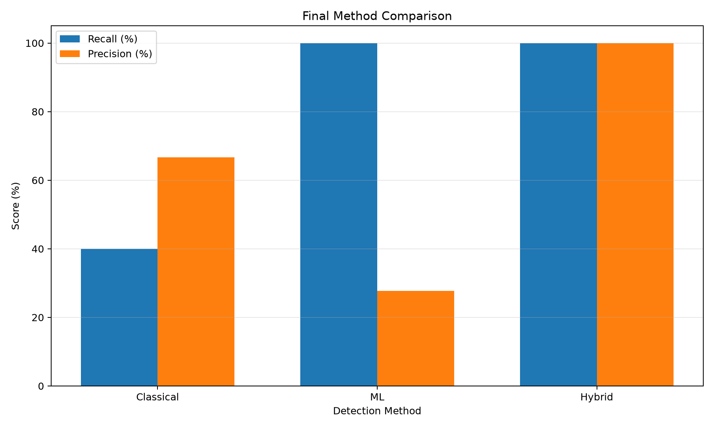
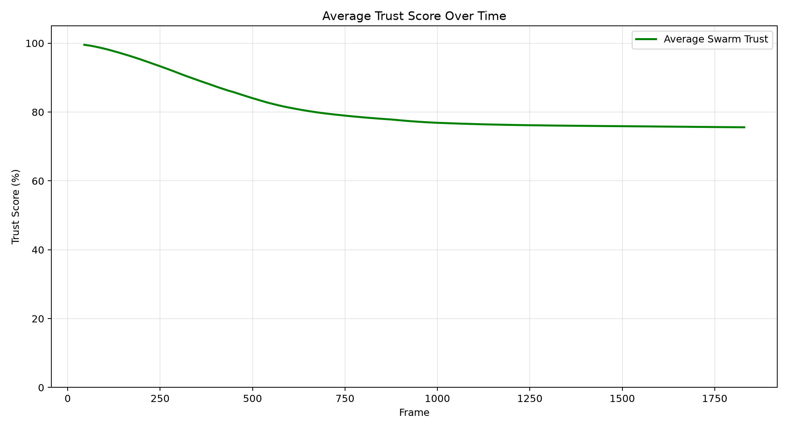
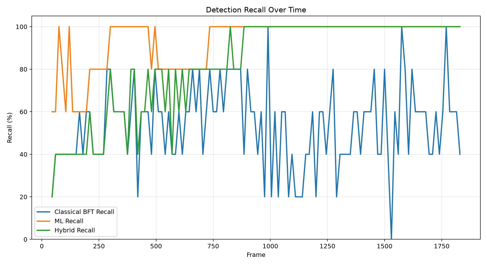
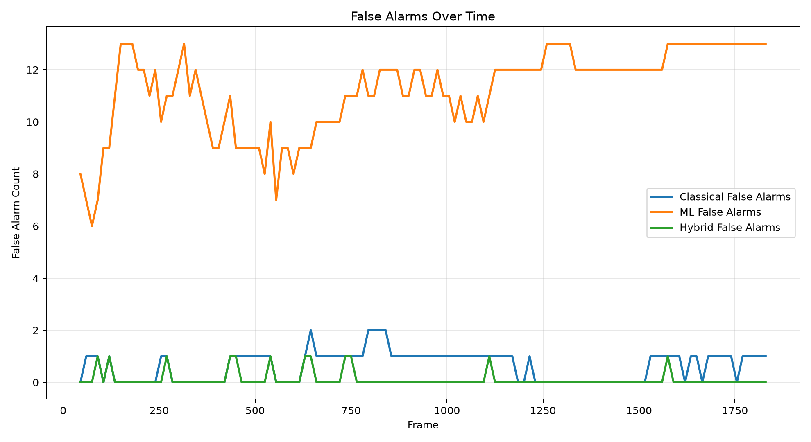
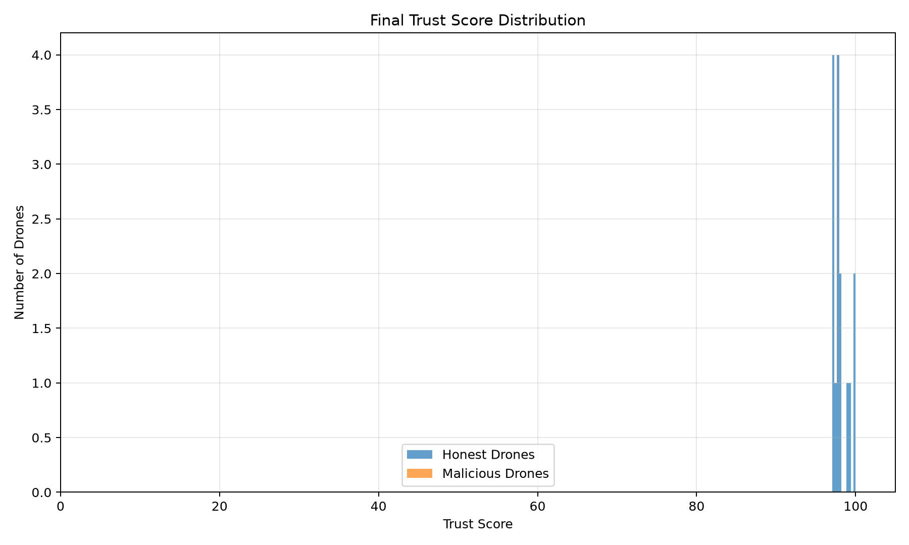
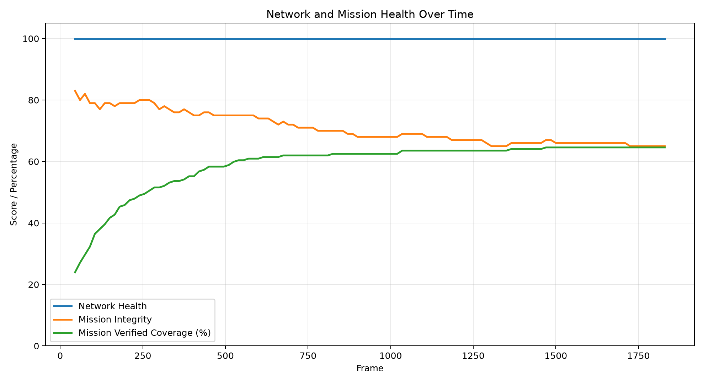
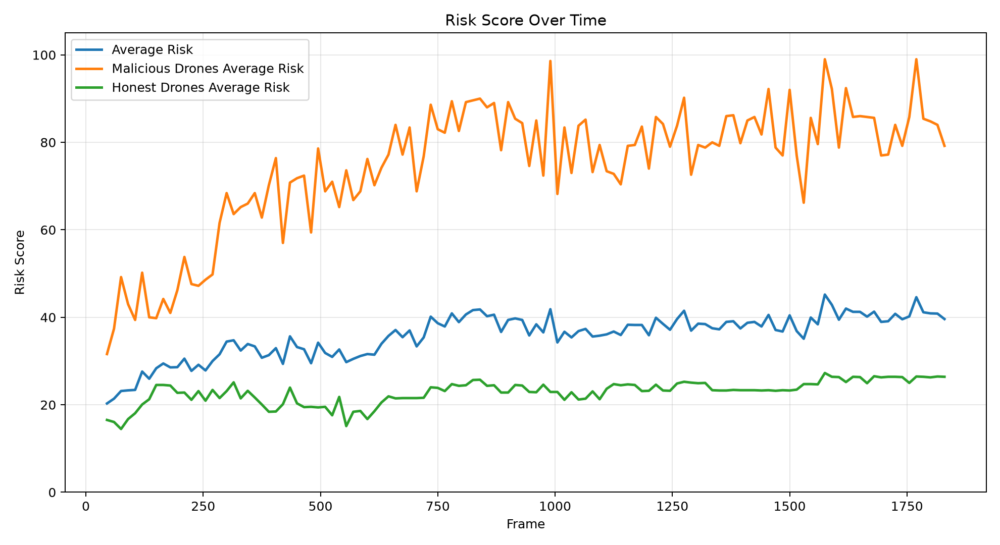

PYGAME ENGINE SNAPSHOTS & ANALYTICS
High-resolution frame captures, before/after evolution comparisons, and benchmark analytics from the live MIRAGE Python PyGame autonomous swarm simulation runtime.
SIMULATION EVOLUTION
.png)
.png)
Swarm Flight Arena — Basic → Full Telemetry HUD
.png)
.png)
Byzantine Detection → Quarantine Containment
PERFORMANCE ANALYTICS

Final Method Comparison — Recall & Precision
Bar chart comparing Classical BFT, ML Isolation Forest, and Hybrid Defense detection accuracy.

Average Swarm Trust Score
Trust decay trajectory across simulation frames.

Detection Recall Over Time
How recall improves as the detector converges.

False Alarm Rate
Tracking false positives across simulation runtime.

Final Trust Score Distribution
Histogram showing final trust spread across all drones.

Network Health & Mission Integrity
Dual-axis graph tracking swarm connectivity and task completion.

Composite Risk Score
Aggregated risk metric combining trust, detection, and network signals.
PYGAME SNAPSHOTS
Swarm Flight Arena & Main Telemetry HUD
Live visualization of 20 autonomous UAVs in flight, showing real-time coordinate broadcasting, altitude oscillations, and side telemetry metrics.
Hybrid Byzantine Detection & Outlier Rays
Simultaneous detection of rogue nodes broadcasting falsified position vectors, showing red X crosshairs and active detection rings.
Quarantine Containment & Holding Corral
Physical redirection of compromised UAVs into the containment zone once trust drops below the 45.0 threshold.
Inter-Drone Communication Mesh Graph
Real-time network graph overlay showing trusted P2P mesh relay links and severed quarantined node edges.